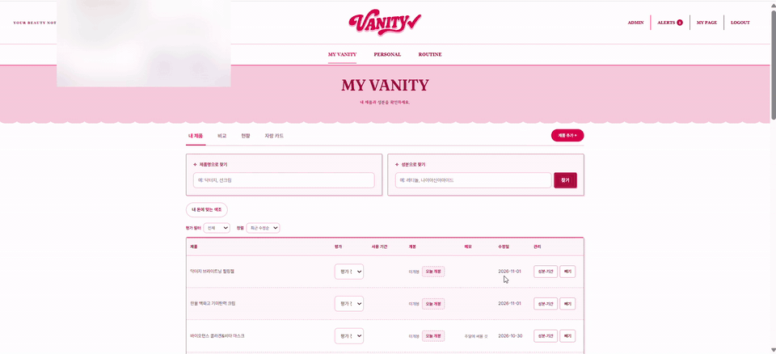
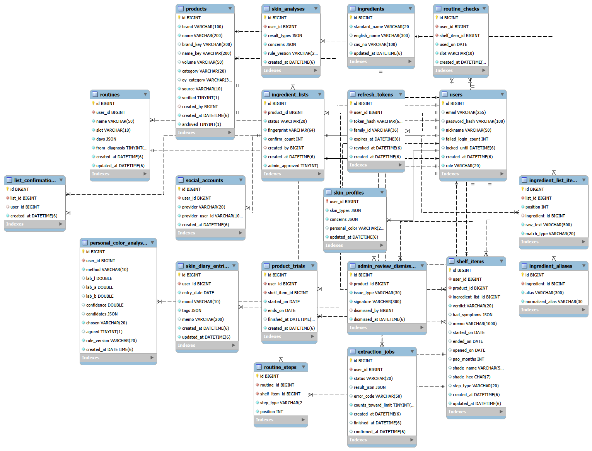

보유 화장품과 피부 기록을 바탕으로 성분을 확인하고, 나에게 맞는 사용 루틴을 관리하는 웹 서비스
💡 내가 이 프로젝트로 알게 된 점
1. 잠금은 “거는 순서”까지 정해야 한다
두 사용자가 같은 성분표를 동시에 저장하자 DB가 한쪽을 강제로 취소했다. 확인 기록을 넣을 때 DB가 자동으로 건 읽기 잠금 때문에 서로를 기다리는 교착 상태였다. 모든 저장 경로가 같은 순서로 먼저 잠그도록 바꾸면서, 잠금을 거는 것만큼 순서를 맞추는 것이 중요하다는 걸 배웠다.
2. 동시 요청은 “확인 후 저장” 사이의 틈에서 깨진다
요청마다 오늘 저장한 횟수를 세고 저장하면, 동시에 들어온 요청이 같은 숫자를 보고 하루 한도(20회)를 넘을 수 있다. 사용자 행을 잠근 상태에서 확인과 저장을 한 번에 처리하는 방식으로, JEJURO에서 배운 행 잠금을 다른 문제에 다시 적용해 볼 수 있었다.
3. 자동화의 결과를 사용자가 확인할 수 있게 해야 한다
성분명은 표기 차이와 이명이 많고, 캡처를 글자로 읽은(OCR) 결과도 틀릴 수 있다. 무조건 자동으로 확정하기보다 EXACT → ALIAS → FUZZY → UNMATCHED로 단계를 나누고, 애매한 결과는 사용자가 고르게 했다. 정확도를 100%로 만들 수 없을 때는 불확실성을 드러내는 것이 더 나은 설계라는 걸 알게 됐다.
4. 혼자 만드는 프로젝트일수록 기준을 먼저 정해야 한다
기획 · 디자인 · 프론트 · 백엔드 · 배포를 모두 맡다 보니 결정할 것이 많았다. Flyway로 DB 변경 이력을 남기고, 서비스 계층 커버리지 80% 기준과 CI를 먼저 세워 두니 기능을 늘려도 이전 기능이 깨졌는지 바로 확인할 수 있었다.
🎬 시연
1. 메인 화면 · 로그인
서비스의 주요 기능을 둘러보고 계정으로 로그인합니다.

2. 제품 등록 (링크 · 전성분 붙여넣기 · 캡처 글자 읽기)
링크나 전성분 붙여넣기, 캡처 글자 읽기로 제품을 등록합니다.

3. 나의 화장대
보유한 화장품을 한곳에 모아 제품과 성분 정보를 관리합니다.

4. 피부 분석 · 피부 일지
피부 유형과 고민을 확인하고, 날짜별 피부 상태를 기록합니다.

5. 사용 루틴 · 새 제품 테스트
화장대 제품으로 만든 루틴의 사용을 체크하고 새 제품 사용 기간을 기록합니다.

6. 퍼스널컬러
사진과 색상 비교를 통해 퍼스널컬러를 확인하고 저장합니다.

7. 화장대 분석 · 비교
보유한 스킨케어 제품의 성분과 사용 상태를 진단하고 두 제품의 성분을 비교합니다.

8. 관리자
등록된 제품을 관리하고 제품 정보와 성분 데이터를 점검합니다.

🏗 시스템 구성
flowchart LR
U["사용자 브라우저<br/>React · Vite<br/>캡처 글자 읽기 tesseract.js"] -->|"HTTPS / API"| N["Nginx"]
N --> A["Spring Boot<br/>인증 · 제품 · 성분 매칭 · 루틴"]
A --> D[("MySQL<br/>Flyway")]
A -->|"원료 성분 사전"| MFDS["식약처 원료성분정보 API"]
A -->|"소셜 로그인"| K["Kakao OAuth"]
G["GitHub Actions"] -->|"CI 성공 후 이미지 배포"| A
- 한 애플리케이션: Gradle이 프론트엔드 빌드 결과와 Flyway SQL을 JAR에 포함
- 캡처 처리: 전성분 캡처는 브라우저 안에서 글자로 읽고(tesseract.js) 이미지는 서버로 보내지 않음. 서버는 받은 글을 성분 사전과 대조
- 배포: main 배포 워크플로가 CI를 호출하고, 성공 후 이미지를 빌드해 GHCR에 올림. 배포 스크립트는 헬스체크 실패 시 이전 이미지로 롤백
- DB 운영: RDS 대신 EC2 안 MySQL 컨테이너(Docker 네트워크) + 매일 백업
전성분 등록: 정상 흐름과 예외 분기
sequenceDiagram
participant U as 사용자 브라우저
participant S as Spring Boot
participant DB as MySQL
alt 캡처 이미지
U->>U: 브라우저에서 글자 읽기 (tesseract.js)
alt 신뢰도 50 미만 · 90초 초과
U-->>U: 실패 안내, 직접 붙여넣기로
else 읽기 성공
U->>U: 붙여넣기 칸에 채움 (80 미만은 경고)
end
else 링크 · 직접 붙여넣기
U->>U: 전성분 글 입력
end
U->>S: 전성분 글 매칭 요청
S->>DB: 성분 사전 조회 (EXACT → ALIAS → FUZZY)
S-->>U: 성분별 매칭 결과와 후보
U->>S: 사용자 확인 후 저장
S->>DB: 등록 작업 → 성분 버전 → 확인 기록 순서로 잠그고 저장
데이터베이스 ERD

데이터 설계 (주요 관계)
erDiagram
users o|--o{ products : creates
users ||--o{ shelf_items : owns
users ||--o{ extraction_jobs : requests
users ||--o{ routines : creates
users ||--o{ skin_analyses : records
users ||--o{ skin_diary_entries : writes
products ||--o{ ingredient_lists : has
ingredient_lists ||--o{ ingredient_list_items : contains
ingredients ||--o{ ingredient_aliases : has
ingredients o|--o{ ingredient_list_items : matched
products ||--o{ shelf_items : added
ingredient_lists ||--o{ shelf_items : selected
routines ||--o{ routine_steps : contains
shelf_items ||--o{ routine_steps : used
🛠 기술 스택
| 구분 | 기술 | 사용한 곳 |
|---|---|---|
| Backend | Java 21 · Spring Boot 4.1 · Spring Security · JPA · Validation · Actuator | REST API, 인증, 성분 매칭 · 저장 |
| 인증 | JWT (OAuth2 Resource Server) · OAuth2 Client (카카오) | 로그인 · 카카오 계정 연동 |
| Frontend | React 18 · Vite · React Router 6 · Axios | 화장대 · 루틴 · 피부 기록 화면 |
| 브라우저 처리 | MediaPipe Tasks Vision · Tesseract.js | 퍼스널컬러 얼굴 색상 입력, 브라우저 OCR |
| Database | MySQL 8 · Flyway | 서비스 데이터, DB 변경 이력 관리 |
| 데이터 | 식약처 원료성분정보 API · Apache Commons Text | 성분 사전, 유사도 매칭 |
| 테스트 | JUnit · JaCoCo (서비스 계층 80%) · Vitest · Testing Library | 백엔드 · 프론트 테스트 |
| 보안 테스트 | 보안 4종 전수 (401 비인가 · 403 CSRF · 404 타인 격리 · 200 정상) + 차단 후 DB 재조회 무결성 검증 | 15개 컨트롤러 보안 테스트 전수 통과 |
| Infra | Docker · Nginx · AWS EC2 · GitHub Actions · GHCR | 컨테이너 배포, 롤백, DB 백업 |
🔥 트러블슈팅
① 같은 성분표를 동시에 저장하면 한쪽이 취소됨
🚨 문제: 사용자 A와 B가 같은 제품의 같은 성분표를 거의 동시에 저장하면, DB가 한쪽 저장을 강제로 취소해 오류 화면이 뜸
🔍 원인: 저장 순서가 “확인 기록 추가 → 성분 버전 수정”이었음. 확인 기록을 넣는 순간 DB가 연결된 성분 버전에 자동으로 읽기 잠금을 걸고, 두 사람이 서로의 잠금이 풀리길 기다리며 멈춤(교착 상태)
해결
- 저장할 때 성분 버전을 먼저 비관적 잠금(
@Lock·FOR UPDATE)으로 잡음 - 모든 저장 경로의 잠금 순서를 등록 작업 → 성분 버전 → 확인 기록으로 고정
- “이미 있음” 충돌이 나면 새 트랜잭션으로 처음부터 한 번 더 시도
- (성분 버전, 사용자) UNIQUE 제약으로 같은 사람의 같은 확인은 DB가 한 번만 허용
✅ 결과: 두 사람 동시 저장 → 둘 다 성공(버전 1개 · 확인 2개 → VERIFIED), 4명 동시 저장 → 서버 오류(500) 0건. 동시 저장을 실제 스레드로 재현하는 ProductConfirmConcurrencyTest로 검증
② 같은 성분도 표기가 다르고 OCR 결과가 모호함
🚨 문제: 이미지에서 읽은 성분명이 사전의 표준명과 다르거나, 하나의 이명이 여러 성분에 대응할 수 있음
🔍 원인: 원문 표기와 식약처 사전의 표준명 · 이명이 항상 같지 않고, 글씨가 흐리면 글자 읽기 결과도 달라짐
해결
| 단계 | 조건 | 처리 |
|---|---|---|
| EXACT | 정규화한 표준명과 일치 | 해당 성분에 연결 |
| ALIAS | 이명이 하나의 성분에만 연결 | 해당 성분에 연결 |
| FUZZY | 전체 텍스트 검색 후보 20개 중 유사도 0.8 이상 | 최대 3개 후보 제시 → 사용자 선택 |
| UNMATCHED | 적합한 후보 없음 | 일치 없음으로 구분 표시 |
✅ 결과: 모호한 결과를 자동 확정하지 않고, 원문과 매칭 상태를 함께 보여 사용자가 확인할 수 있음
③ 캡처 글자 읽기(OCR) 결과를 믿어도 되는지 알 수 없음
🚨 문제: 상세 페이지 캡처를 브라우저에서 글자로 읽으면, 작은 캡처 · 흐린 글자 · 글자 없는 그림에서 엉뚱한 결과가 그대로 성분 칸에 들어갈 수 있음
🔍 원인: 캡처 크기와 화질에 따라 정확도 차이가 크고, 성분 목록의 쉼표를 마침표로 잘못 읽는 일이 많음
해결
- 이미지 종류별 신뢰도를 직접 측정: 보통 글자 90 · 흐린 글자 82 · 가로 288px 캡처 74 · 글자 없는 그림 27
- 신뢰도 50 미만은 실패(칸에 넣지 않음), 80 미만은 경고와 함께 넣고, 80 이상은 그대로 넣음
- 가로 2,400px가 되도록 키워서 읽고(최대 4배), 가로 600px 미만 캡처는 먼저 안내
- 쉼표를 마침표로 잘못 읽은 곳과 한글 사이 공백을 보정하고, 90초 안에 끝나지 않으면 멈춘 뒤 직접 붙여넣기로 안내
- 이미지는 서버로 보내지 않고 브라우저 안에서만 처리
✅ 결과: 보통 상세 페이지 글자는 성분 19개 중 17개를 그대로 읽음. 애매한 결과는 경고와 함께 사용자가 고친 뒤 저장 (측정 표본이 작아 정답 세트를 늘려 재측정 필요)
④ 사용자 데이터 보안 4종 전수 테스트 및 DB 무결성 보장
🚨 문제: 화장대·루틴·피부 일지 등 개인화 데이터를 다루는 API에서 로그인 누락, CSRF 위조 요청, URL 조작을 통한 타인 데이터 침범 위험
🔍 원인: 단순 권한 체크만으로는 변조된 요청이나 타인의 ID로 접근하는 권한 탈취 시도를 원천 차단하기 어렵고, 요청 거절 후 실제 DB 상태가 보존되는지 검증이 필요함
해결
- 사용자 데이터를 다루는 모든 API에 보안 테스트 4종 전수 작성 (로그인 안 함 401 · 위조 요청 403 · 남의 데이터 404/403 · 정상 200)
- 차단 후 DB 무결성 재검증: 타인의 수정/삭제 요청이 차단된 직후, DB를 다시 SELECT하여 기존 데이터가 훼손 없이 온전히 보존되었는지 검증
✅ 결과: 15개 보안 테스트 클래스 전수 통과, 비인가 접근 원천 차단 및 사용자 데이터 무결성 보장